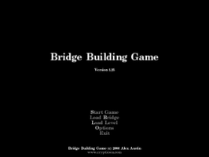
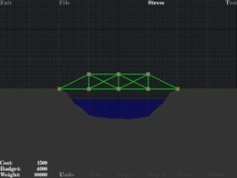

Bridge Building Game
Dieser Artikel wurde für die folgenden Ubuntu-Versionen getestet:
Ubuntu 16.04 Xenial Xerus
Ubuntu 14.04 Trusty Tahr
Zum Verständnis dieses Artikels sind folgende Seiten hilfreich:
Bridge Building Game ist der erste Titel einer Spielreihe bei der man Brücken entwerfen und bauen muss. Diese Version ist grafisch nicht so ansprechend, da sie eine Wiederveröffentlichung der Version von 2000 ist. Spielspaß ist jedoch garantiert. Der Nachfolgetitel Bridge Builder ist ebenfalls für Linux verfügbar
|  |  |
| Menü | Spieleszene |
Vorbereitung¶
Für das Spiel ist das folgende Paket erforderlich [7]:
libsdl-image1.2:i386
 mit apturl
mit apturl
Paketliste zum Kopieren:
sudo apt-get install libsdl-image1.2:i386
sudo aptitude install libsdl-image1.2:i386
benötigt.
Installation¶
Das Spiel kann man von oder brothersoft.com  (Alternativlink ) herunterladen. Die Datei bridgebuilding.tar.gz entpacken [1]. Den Spieleordner bridgebuilding nach ~/Spiele kopieren:
(Alternativlink ) herunterladen. Die Datei bridgebuilding.tar.gz entpacken [1]. Den Spieleordner bridgebuilding nach ~/Spiele kopieren:
Starter¶
Nun mit einem Editor [2] eine Startdatei bridgebuilding.sh im Ordner ~/Spiele/bridgebuilding erstellen und anschließend ausführbar [3] machen:
1 2 3 | #!/bin/bash cd /home/BENUTZER/Spiele/bridgebuilding ./bridgebuilding |
Abschließend die Datei symbolisch verlinken [4]:
ln -s ~/Spiele/bridgebuilding/bridgebuilding.sh ~/bin/bridgebuilding
Über bridgebuilding kann das Spiel nun gestartet [5] und bei Bedarf ein Menüeintrag [6] vorgenommen werden.
Tastenkürzel¶
| Bridge Building Game | |
| Taste(n) | Funktion |
| A + S + D + W | Ansicht verändern. |
| Esc | Vorherige Ebene. |
 | Bauteil setzen. |
 | Bauteil entfernen. |
| G | Gitterdetails ein/ausblenden. |
| Q | Zoom in |
| Z | Zoom out |
Deinstallation¶
Zur Deinstallation im Terminal [2] mit entsprechenden Rechten [3] folgende Befehle ausführen:
rm -dr ~/Spiele/bridgebuilding #löscht den Ordner sowie dessen Inhalt rm ~/bin/bridgebuilding #löscht den Link

Infobox¶
| Bridge Building Game | |
| Genre: | Puzzle |
| Sprache: |  |
| Veröffentlichung: | 2000 |
| Publisher: | Chronic Logic |
| Systemvoraussetzungen: | Prozessor mind. 200 MHz - Grafikkarte (OpenGL) |
| Medien: | Download |
| Strichcode / EAN / GTIN: | - |
| Läuft mit: | nativ |
- Erstellt mit Inyoka
-
 2004 – 2017 ubuntuusers.de • Einige Rechte vorbehalten
2004 – 2017 ubuntuusers.de • Einige Rechte vorbehalten
Lizenz • Kontakt • Datenschutz • Impressum • Serverstatus -
Serverhousing gespendet von